Cut command
Use the Cut command  to create a cut through a defined portion of a part.
to create a cut through a defined portion of a part.
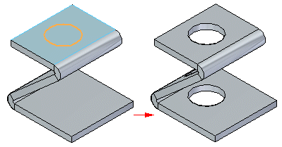
You can create a sheet metal cutout with an open profile
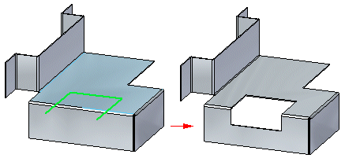
or a closed profile.
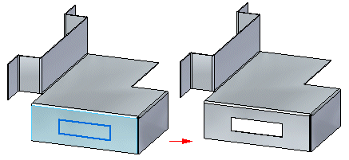
Face Normal cut types
Cuts normal to the face include:
- Thickness cut
-
This option creates a cutout that compensates for the material thickness of the part.
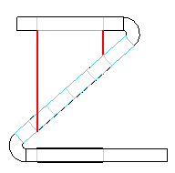
The Thickness cut option is useful when creating parts in which a shaft must pass through aligned circular cutouts.
- Mid–plane cut
-
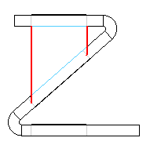
This option creates a cutout based on the mid-plane of the part.
- Nearest Face cut
-
This option creates a cutout based on the nearest face of the part.
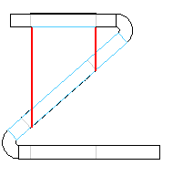
Cuts across bends
The Wrapped Cut option unfolds the bend to create a cut,
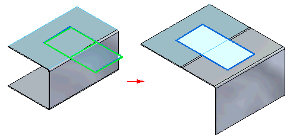
and then rebends when the cut is complete.
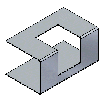
As you move a face containing a wrapped cut, the cutouts remain consistent.
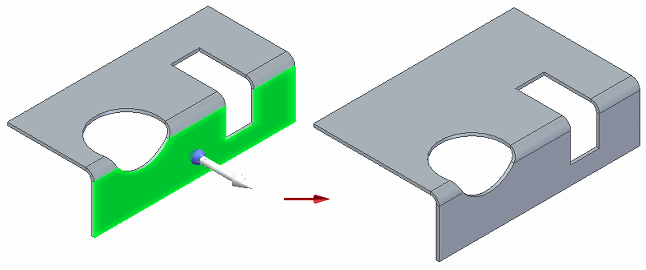
You can move a cylindrical cutout across bends and the cutout maintains its shape.
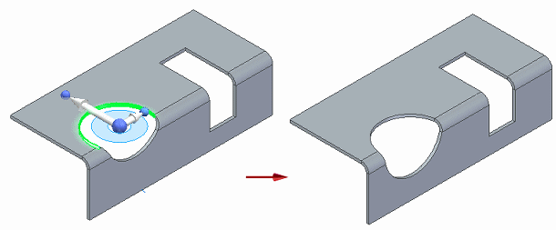
If you try to end the move of the cutout within a bend area a warning is displayed..
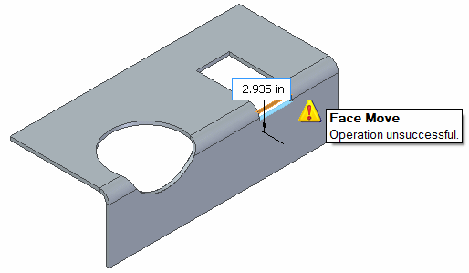
How do I
Construct a normal cutout in a sheet metal partConstruct a sheet metal cutout from an open profile
Construct a sheet metal cutout from a closed profile
Learn more
Sheet metal cutoutsLook up more details
Normal Cutout command (Sheet Metal environment)Normal Cutout command bar (Sheet Metal Environment)
Cut command bar